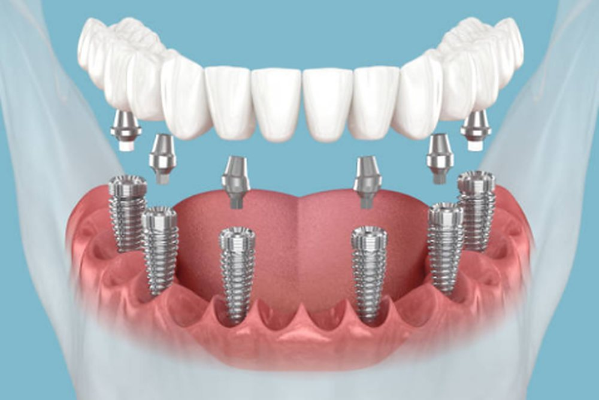
Fiksna protetika
Krunice i mostovi koji nadoknađuju oštećene ili izgubljene zube. Izgledaju i funkcionišu kao vaši zubi.
Cena: [CENA] RSD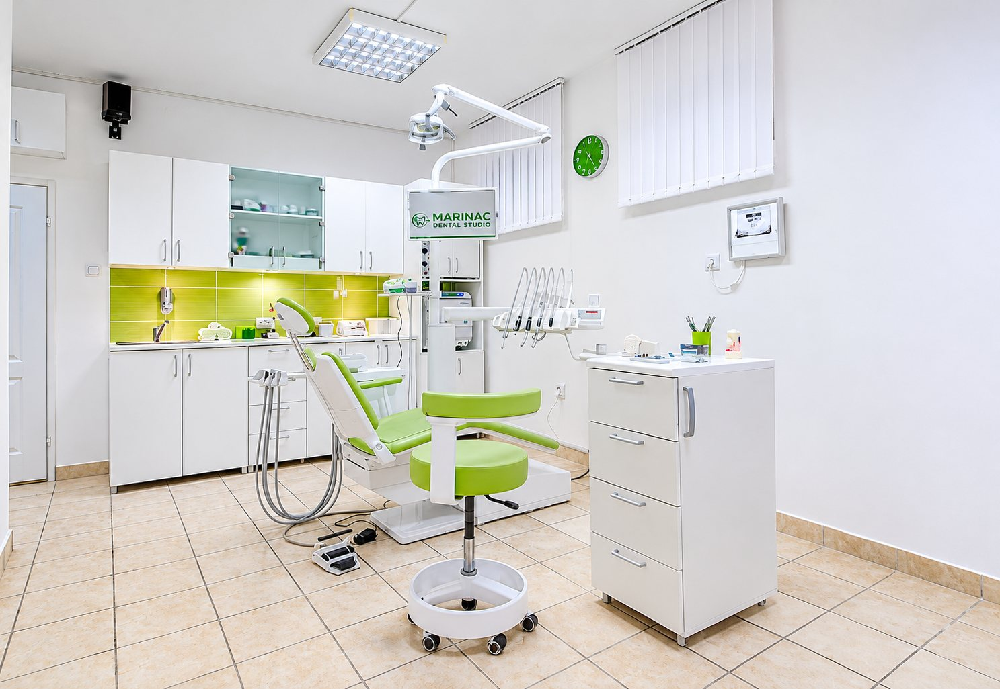
Pon–pet 11–19 · sub 10–15
Fali vam zub, boli vas ili želite lepši osmeh? Pozovite, opišite nam vaš problem i dogovorićemo termin.
Pogledajte usluge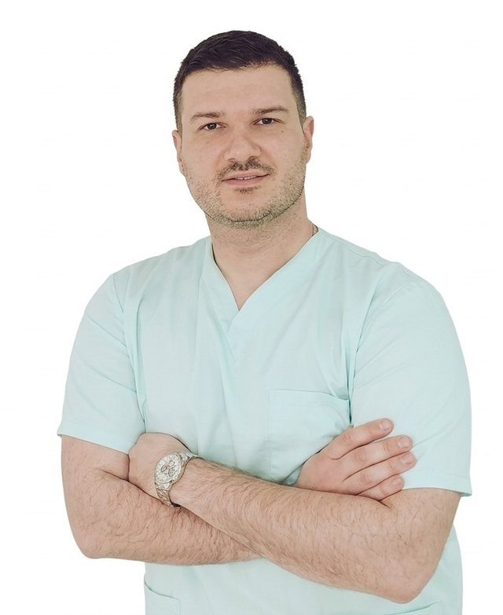
Vaš stomatolog
Boško MarinacStomatolog, osnivač Marinac Dental Studija
Kod nas vas od prvog pregleda do poslednje kontrole vodi isti stomatolog. Prvo saslušamo vaš problem, a onda predlažemo rešenje. Plan, opcije i cenu znate pre nego što počnemo, a ako postoji jednostavniji i jeftiniji put, reći ćemo vam.
Usluge
Kompletne stomatološke usluge na jednom mestu, uz individualan pristup svakom pacijentu.

Krunice i mostovi koji nadoknađuju oštećene ili izgubljene zube. Izgledaju i funkcionišu kao vaši zubi.
Cena: [CENA] RSD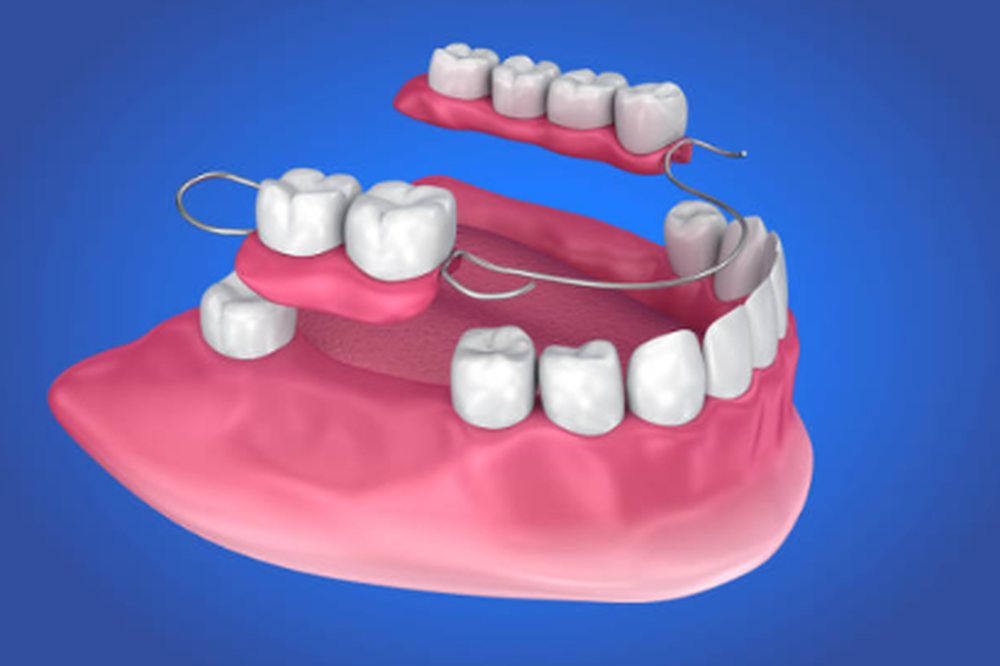
Totalne i parcijalne proteze za one kojima fali više zuba. Prilagođavamo ih dok ne budu udobne.
Cena: [CENA] RSD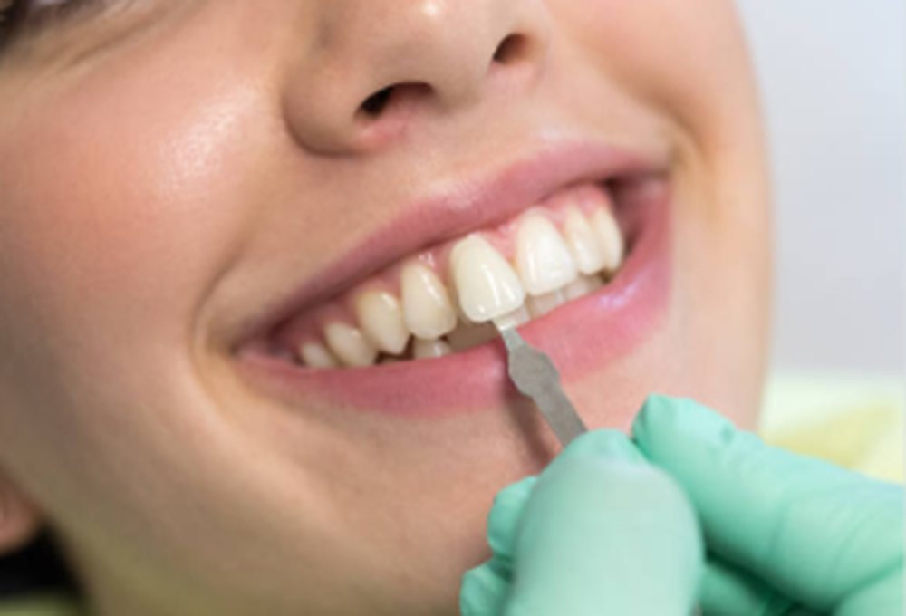
Ljuskice, izbeljivanje i oblikovanje zuba. Kada osmeh treba da izgleda bolje, a ne samo da bude zdrav.
Cena: [CENA] RSD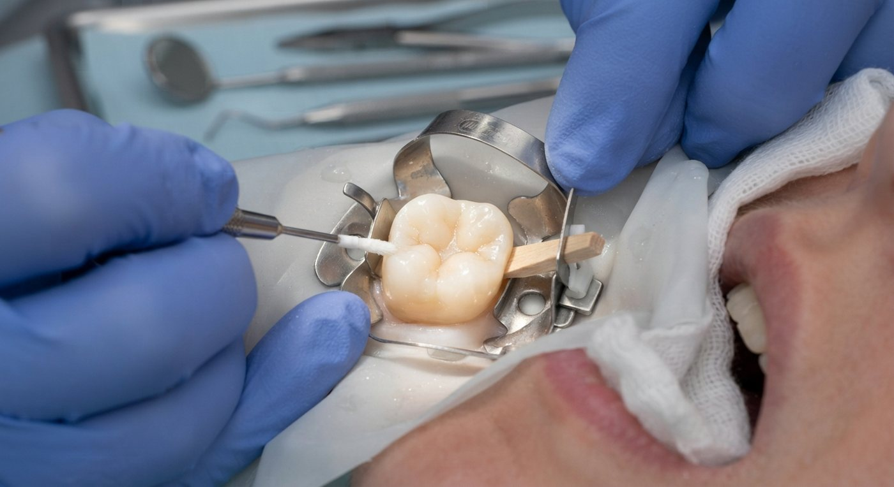
Plombe i lečenje karijesa. Oštećen zub vraćamo u prvobitni oblik materijalom u boji zuba.
Cena: [CENA] RSD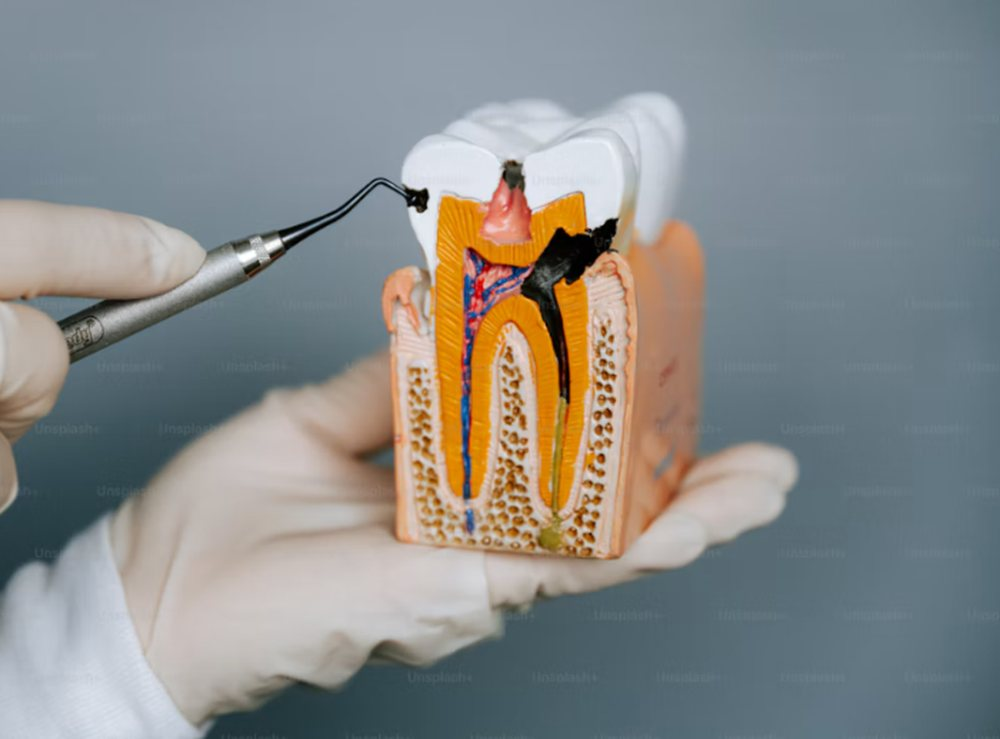
Lečenje kanala korena kada je zahvaćen nerv. Cilj je da sačuvamo vaš zub umesto da ga vadimo.
Cena: [CENA] RSD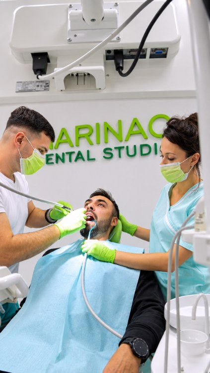
Zašto mi
Svakom pacijentu pristupamo individualno, uz razumevanje njegovih potreba i posvećenost kvalitetnoj stomatološkoj nezi.
Plan lečenja pravimo prema vašim zubima i potrebama.
Od prvog pregleda do kraja vodi vas dr Boško Marinac.
Plan, opcije i cenu znate pre nego što bilo šta počnemo.
Ordinacija u Zemunu sa ocenom 4,9 na Google-u.
Pre i posle
Pravi pacijenti i prave fotografije iz naše ordinacije, bez filtera i retuša. Pomerite liniju i uporedite osmeh pre i posle.
Prevucite liniju na fotografiji
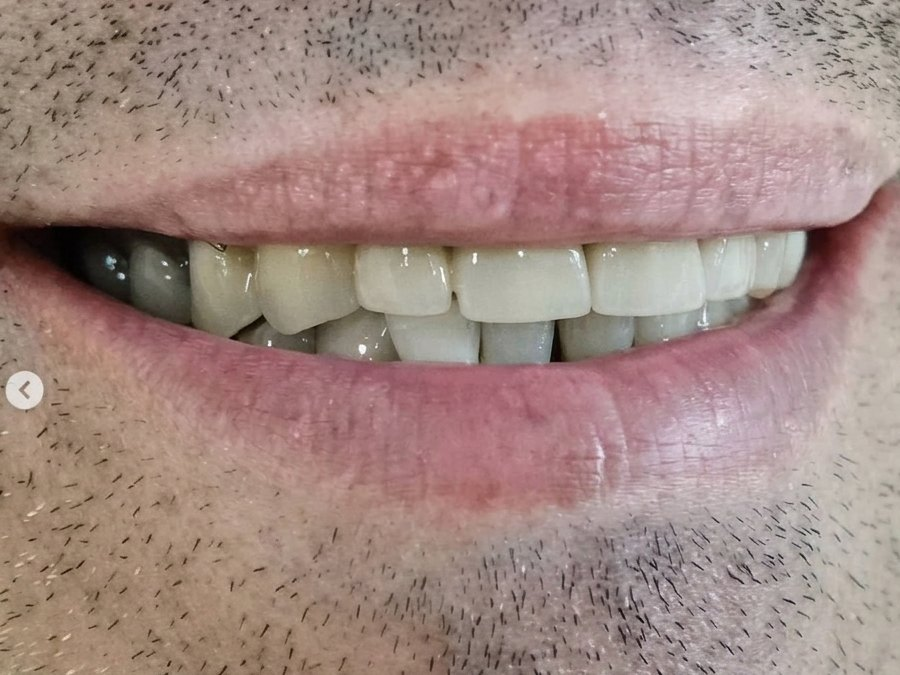
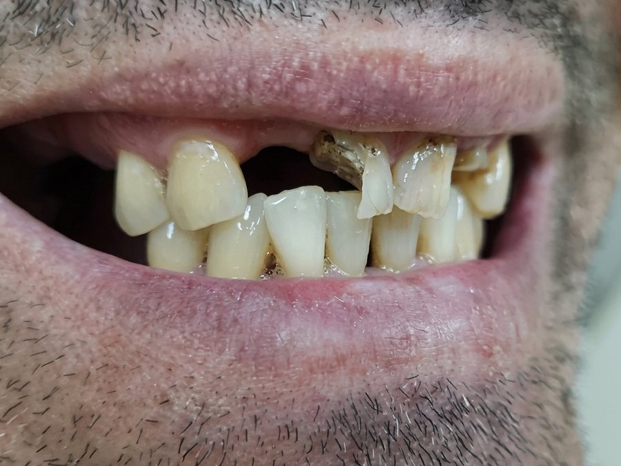
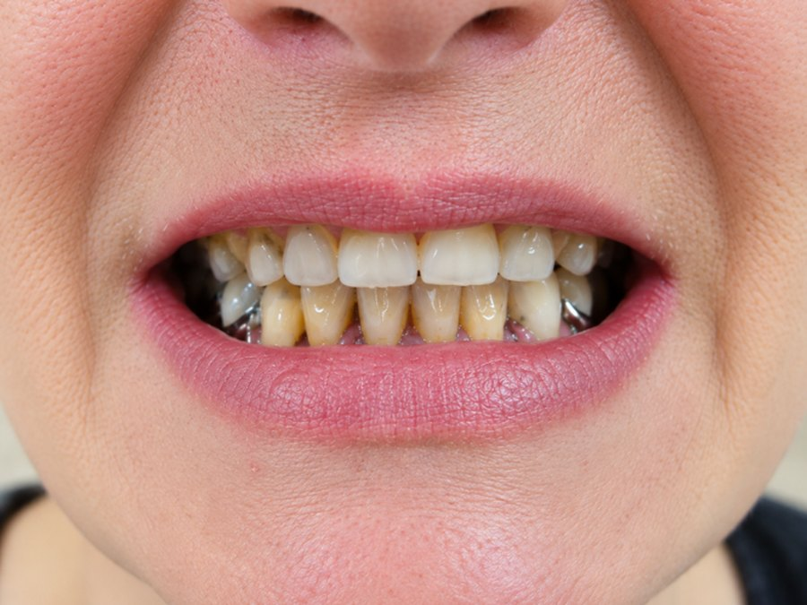
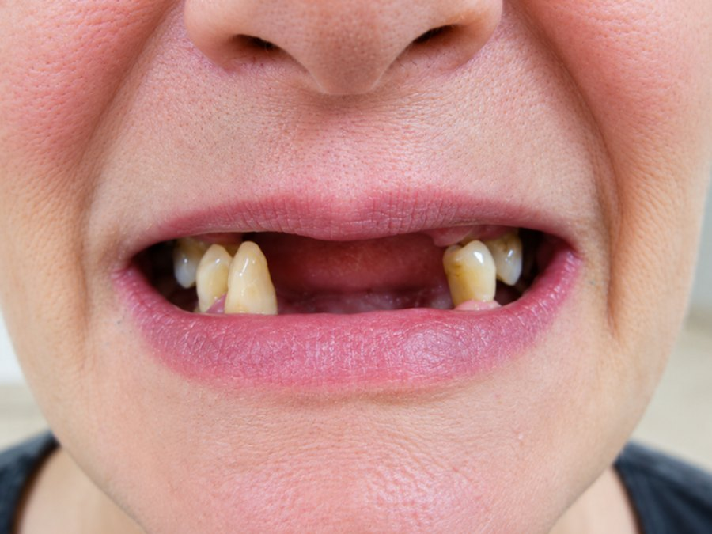
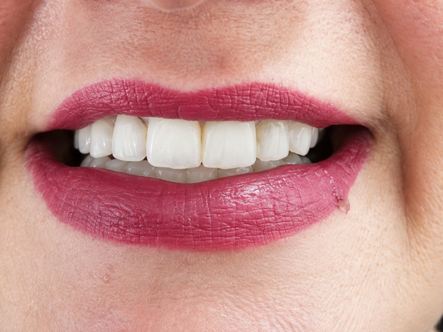
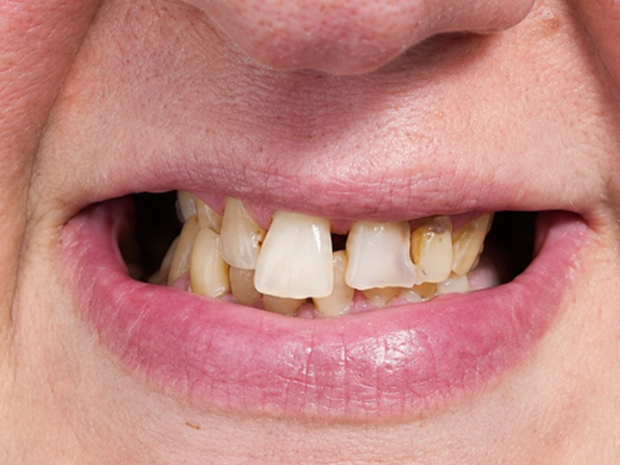
Recenzije
Najbolja preporuka su reči ljudi koji su već bili kod nas. Ovo su njihove recenzije sa Google-a, prenete bez izmena.
Kontakt
Imate pitanje ili želite da zakažete pregled? Kontaktirajte nas i rado ćemo vam pomoći.
Pozovite odmah064 537 9901Ili nam pišite
| Ponedeljak – petak | 11–19 h |
|---|---|
| Subota | 10–15 h |
| Nedelja | zatvoreno |